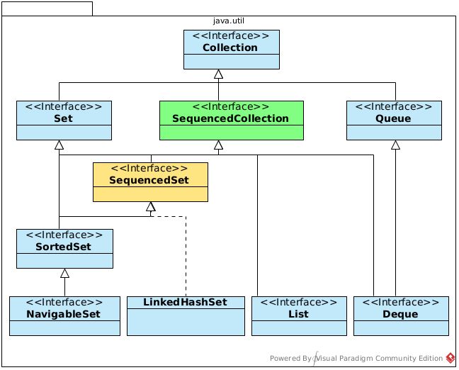
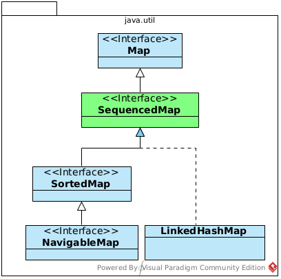

JEP 431: Sequenced Collections
Einführung von neuen Methoden für Sequenced Collection, Sequenced Sets und Sequenced Maps.
Einheitliche Methoden für Zugriff und Verarbeitung von Elementen.
Verbesserung der Benutzerfreundlichkeit bei der Arbeit mit SequencedCollection.
Bessere Unterstützung für reverse Iteration und Erstellung von Streams in umgekehrter Reihenfolge.
|  |
|
|  |